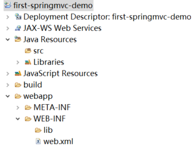

首页 > Spring MVC
第一个Spring MVC程序
本节，我们将通过一个简单的 Java Web 应用来演示下如何创建 Spring MVC 程序。
1. 在 Eclipse 中，依次单击 File -> New -> Dynamic Web Project，创建一个 Java Web 项目，如下图所示。
2. 在弹出的 Dynamic Web Project 窗口中，设置 Project Name 为 first-springmvc-demo，然后点击下方的 New Runtime... 按钮，对该项目运行所需的服务器进行设置，如下图。
图2：设置项目名称和运行时环境
3. 在弹出的 New Server Runtime Environment 窗口中，选择 Apache 下对应版本的 Tomcat（这里我们以 Tomcat v9.0 为例），然后点击下方的 Next 按钮，如下图。
图3：选择 Tomcat 服务器版本
4. 在 Tomcat Server 窗口中，设置本地 Tomcat 的路径以及 JRE 版本，如下图所示。
图4：设置 Tomcat 路径
5. 返回 Dynamic Web Project 窗口，可以看到 Tomcat 服务器已经设置完成，点击下方的 Next 按钮，如下图所示。

图5：Web 项目设置
6. 在 Web Module 窗口中将 Content directory 修改为 webapp，并勾选下方的 Gnerate web.xml deployment desciptor，最后点击下方的 Finish 按钮完成项目的创建，如下图所示。
图6：修改 Content 目录，生成 web.xml
7. Java Web 项目 first-springmvc-demo 创建完成之后，结构如下图所示。
其中 spring-web-5.3.13.jar 和 spring-webmvc-5.3.13.jar 是 Spring MVC 的依赖包，其余的则都是 Spring 的核心依赖。关于 Spring 这些依赖包的下载，请参考《Spring 开发环境搭建》。
在传统的 Java Web 开发中，通常都是使用 JSP 来进行前台页面的开发。但 JSP 页面中常常会掺杂这一些后端的 Java 代码，其中任何一个简单的 Java 代码问题都有可能导致整个项目无法启动，而这显然不符合“前后端分离”的思想。
因此在现在的 Java Web 开发中，已经很少有人在使用 JSP 了。各互联网公司、组织或个人都陆续使用其他技术来代替 JSP ，而 Thymeleaf 就是其中较为优秀的技术之一。
将以下依赖存放到 first-springmvc-demo 项目的 webapp/WEB-INF/lib 目录中，以完成 Thymeleaf 依赖的导入。
跟所有的 Servlet 一样，DispatcherServlet 也需要在 web.xml 中进行配置，它才能够正常工作，示例代码如下：
Spring MVC 初始化时，会自动从应用程序的 WEB-INF 目录下查找 Spring MVC 的配置文件。该配置文件的默认命名规则为
我们也可以将 Spring MVC 的配置文件存放在应用程序目录中的其他位置，但需要在 <servlet> 元素下通过 <init-param> 元素的 contextConfigLocation 参数，来指定 Spring MVC 配置文件的位置，示例代码如下。
默认情况下，所有的 Servlet（包括 DispatcherServlet ）都是在第一次调用时才会被加载。这种机制虽然能一定程度上降低项目启动的时间，但却增加了用户第一次访问所需的时间，给用户带来不佳的体验。因此在上面的 web.xml 中，我们通过 <load-on-startup> 标签对 Spring MVC 前端控制器 DispatcherServlet 的初始化时间进行了设置，让它在项目启动时就完成了加载。
load-on-startup 元素取值规则如下：
此外，我们还通过 <servlet-mapping> 将 DispatcherServlet 映射到“/”，表示 DispatcherServlet 需要截获并处理该项目的所有 URL 请求（以 .jsp 为后缀的请求除外）。
在上面的配置中，我们定义一个名为 viewResolver，类型为 ThymeleafViewResolver 的 Bean，这其实是 Thymeleaf 的视图解析器。通过它，我们可以对 Thymeleaf 视图的编码、视图前缀、视图后缀等进行配置。
在 Spring MVC 中，一个普通的 Java 类只要标注了 @Controller 注解，就会被 Spring MVC 识别成 Controller。Controller 类中的每一个处理请求的方法被称为“控制器方法”。
控制器方法在处理完请求后，通常会返回一个字符串类型的逻辑视图名（ViewName），Spring MVC 需要借助 ViewResolver（视图解析器）将这个逻辑视图名解析为真正的 View 视图，最终响应给客户端展示。
例如，在 first-springmvc-demo 项目的 src 目录下创建一个 net.biancheng.c.controller 包，并在该包下创建一个名为 HelloController 的控制器类，代码如下。
在以上代码中，除了 @Controller 注解外，我们还在方法上使用了 @RequestMapping 注解，它的作用就是将请求和处理请求的控制器方法关联映射起来，建立映射关系。Spring MVC 的 DispatcherServelt 在拦截到指定的请求后，就会根据这个映射关系将请求分发给指定的控制器方法进行处理。
1. 在 /WEB-INFO 目录下创建一个 templates 的目录，并在该目录下创建 index.html，代码如下。
2. 在 /WEB-INFO/templates 下创建 login.html，代码如下。
3. 在 /WEB-INFO/templates 下创建 register.html，代码如下。
图8：首页
2. 点击注册，跳转到注册页面，结果如下图。
图9：注册页面
3. 点击登陆，跳转到登陆页面，结果如下图。

图10：登陆页面
创建 Java Web 项目
首先，我们需要使用 Eclipse 创建一个 Java Web 项目，具体步骤如下。1. 在 Eclipse 中，依次单击 File -> New -> Dynamic Web Project，创建一个 Java Web 项目，如下图所示。
图1：创建一个 Java Web 项目
2. 在弹出的 Dynamic Web Project 窗口中，设置 Project Name 为 first-springmvc-demo，然后点击下方的 New Runtime... 按钮，对该项目运行所需的服务器进行设置，如下图。
图2：设置项目名称和运行时环境
3. 在弹出的 New Server Runtime Environment 窗口中，选择 Apache 下对应版本的 Tomcat（这里我们以 Tomcat v9.0 为例），然后点击下方的 Next 按钮，如下图。
图3：选择 Tomcat 服务器版本
4. 在 Tomcat Server 窗口中，设置本地 Tomcat 的路径以及 JRE 版本，如下图所示。
图4：设置 Tomcat 路径
5. 返回 Dynamic Web Project 窗口，可以看到 Tomcat 服务器已经设置完成，点击下方的 Next 按钮，如下图所示。
图5：Web 项目设置
6. 在 Web Module 窗口中将 Content directory 修改为 webapp，并勾选下方的 Gnerate web.xml deployment desciptor，最后点击下方的 Finish 按钮完成项目的创建，如下图所示。
图6：修改 Content 目录，生成 web.xml
7. Java Web 项目 first-springmvc-demo 创建完成之后，结构如下图所示。

图7：项目结构
自此，我们就完成了使用 Eclipse 创建 Java Web 项目的全部步骤。
图7：项目结构
导入 Spring MVC 相关依赖
在完成了 Java Web 项目的创建后，接下来，我们需要将 Spring MVC 相关的依赖引入到该项目中。将以下依赖 Jar 包导入到 first-springmvc-demo 项目的 webapp/WEB-INF/lib 目录中。- commons-logging-1.2.jar
- spring-aop-5.3.13.jar
- spring-beans-5.3.13.jar
- spring-context-5.3.13.jar
- spring-core-5.3.13.jar
- spring-expression-5.3.13.jar
- spring-web-5.3.13.jar
- spring-webmvc-5.3.13.jar
其中 spring-web-5.3.13.jar 和 spring-webmvc-5.3.13.jar 是 Spring MVC 的依赖包，其余的则都是 Spring 的核心依赖。关于 Spring 这些依赖包的下载，请参考《Spring 开发环境搭建》。
导入 Thymeleaf 相关依赖
对于 Web 项目而言，前后端分离可以说是当今最主流的思想，该思想概括成一句话就是“前端只写前端的代码，后端只写后端的代码，前后端互不影响”。在传统的 Java Web 开发中，通常都是使用 JSP 来进行前台页面的开发。但 JSP 页面中常常会掺杂这一些后端的 Java 代码，其中任何一个简单的 Java 代码问题都有可能导致整个项目无法启动，而这显然不符合“前后端分离”的思想。
因此在现在的 Java Web 开发中，已经很少有人在使用 JSP 了。各互联网公司、组织或个人都陆续使用其他技术来代替 JSP ，而 Thymeleaf 就是其中较为优秀的技术之一。
Thymeleaf 简介
Thymeleaf 是一款用于渲染 XML/XHTML/HTML5 内容的模板引擎。它与 JSP，Velocity，FreeMaker 等一样，也可以轻易地与 Spring MVC 等 Web 框架集成。但与其它模板引擎相比，Thymeleaf 最大的特点就是，即使不启动 Web 应用也可以直接在浏览器中打开并正确地显示页面。注意：本套教程中，所有案例的页面都是使用 Thymeleaf 编写的，Thymeleaf 的用法也比较简单，详细介绍请参考《Thymeleaf教程（10分钟入门）》。
导入 Thymeleaf 依赖
想要使用 Thymeleaf 进行前台页面开发，必不可少的一步就是将 Thymeleaf 的相关依赖引入到项目中。将以下依赖存放到 first-springmvc-demo 项目的 webapp/WEB-INF/lib 目录中，以完成 Thymeleaf 依赖的导入。
- attoparser-2.0.5.RELEASE.jar
- slf4j-api-1.7.25.jar
- thymeleaf-3.0.14.RELEASE.jar
- thymeleaf-spring5-3.0.14.RELEASE.jar
- unbescape-1.1.6.RELEASE.jar
注：点击以上依赖，即可下载对应依赖的 Jar 包。
配置 DispatcherServlet（前端控制器）
Spring MVC 是基于 Servlet 的，DispatcherServlet 是整个 Spring MVC 框架的核心，主要负责截获请求并将其分派给相应的处理器处理。跟所有的 Servlet 一样，DispatcherServlet 也需要在 web.xml 中进行配置，它才能够正常工作，示例代码如下：
<?xml version="1.0" encoding="UTF-8"?>
<web-app xmlns="http://xmlns.jcp.org/xml/ns/javaee"
xmlns:xsi="http://www.w3.org/2001/XMLSchema-instance"
xsi:schemaLocation="http://xmlns.jcp.org/xml/ns/javaee http://xmlns.jcp.org/xml/ns/javaee/web-app_4_0.xsd"
version="4.0">
<!-- 配置 SpringMVC 的前端控制器，对浏览器发送的请求统一进行处理 -->
<servlet>
<servlet-name>springMVC</servlet-name>
<servlet-class>org.springframework.web.servlet.DispatcherServlet</servlet-class>
</servlet>
<servlet-mapping>
<servlet-name>dispatcherServlet</servlet-name>
<!--设置springMVC的核心控制器所能处理的请求的请求路径
/所匹配的请求可以是/login或.html或.js或.css方式的请求路径
但是/不能匹配.jsp请求路径的请求-->
<url-pattern>/</url-pattern>
</servlet-mapping>
</web-app>
Spring MVC 初始化时，会自动从应用程序的 WEB-INF 目录下查找 Spring MVC 的配置文件。该配置文件的默认命名规则为
{servlet-name}-servlet.xml，例如 springMVC-servlet.xml。我们也可以将 Spring MVC 的配置文件存放在应用程序目录中的其他位置，但需要在 <servlet> 元素下通过 <init-param> 元素的 contextConfigLocation 参数，来指定 Spring MVC 配置文件的位置，示例代码如下。
<?xml version="1.0" encoding="UTF-8"?>
<web-app xmlns="http://xmlns.jcp.org/xml/ns/javaee"
xmlns:xsi="http://www.w3.org/2001/XMLSchema-instance"
xsi:schemaLocation="http://xmlns.jcp.org/xml/ns/javaee http://xmlns.jcp.org/xml/ns/javaee/web-app_4_0.xsd"
version="4.0">
<!-- 配置 SpringMVC 的前端控制器，对浏览器发送的请求统一进行处理 -->
<servlet>
<servlet-name>dispatcherServlet</servlet-name>
<servlet-class>org.springframework.web.servlet.DispatcherServlet</servlet-class>
<!--配置 DispatcherServlet 的一个初始化参数：spring mvc 配置文件按的位置和名称-->
<init-param>
<param-name>contextConfigLocation</param-name>
<param-value>classpath:springMVC.xml</param-value>
</init-param>
<!--作为框架的核心组件，在启动过程中有大量的初始化操作要做
而这些操作放在第一次请求时才执行会严重影响访问速度
因此需要通过此标签将启动控制DispatcherServlet的初始化时间提前到服务器启动时-->
<load-on-startup>1</load-on-startup>
</servlet>
<servlet-mapping>
<servlet-name>dispatcherServlet</servlet-name>
<!--设置springMVC的核心控制器所能处理的请求的请求路径
/所匹配的请求可以是/login或.html或.js或.css方式的请求路径
但是/不能匹配.jsp请求路径的请求-->
<url-pattern>/</url-pattern>
</servlet-mapping>
</web-app>
默认情况下，所有的 Servlet（包括 DispatcherServlet ）都是在第一次调用时才会被加载。这种机制虽然能一定程度上降低项目启动的时间，但却增加了用户第一次访问所需的时间，给用户带来不佳的体验。因此在上面的 web.xml 中，我们通过 <load-on-startup> 标签对 Spring MVC 前端控制器 DispatcherServlet 的初始化时间进行了设置，让它在项目启动时就完成了加载。
load-on-startup 元素取值规则如下：
- 它的取值必须是一个整数；
- 当值小于 0 或者没有指定时，则表示容器在该 Servlet 被首次请求时才会被加载；
- 当值大于 0 或等于 0 时，表示容器在启动时就加载并初始化该 Servlet，取值越小，优先级越高；
- 当取值相同时，容器就会自行选择顺序进行加载。
此外，我们还通过 <servlet-mapping> 将 DispatcherServlet 映射到“/”，表示 DispatcherServlet 需要截获并处理该项目的所有 URL 请求（以 .jsp 为后缀的请求除外）。
创建 Spring MVC 配置
在 first-springmvc-demo 项目的 src 目录下，创建一个名为 springMVC.xml 的配置文件，配置内容如下。
<?xml version="1.0" encoding="UTF-8"?>
<beans xmlns="http://www.springframework.org/schema/beans"
xmlns:xsi="http://www.w3.org/2001/XMLSchema-instance"
xmlns:context="http://www.springframework.org/schema/context"
xsi:schemaLocation="http://www.springframework.org/schema/beans
http://www.springframework.org/schema/beans/spring-beans.xsd
http://www.springframework.org/schema/context
https://www.springframework.org/schema/context/spring-context.xsd http://www.springframework.org/schema/mvc https://www.springframework.org/schema/mvc/spring-mvc.xsd">
<!--开启组件扫描-->
<context:component-scan base-package="net.biancheng.c"></context:component-scan>
<!-- 配置 Thymeleaf 视图解析器 -->
<bean id="viewResolver"
class="org.thymeleaf.spring5.view.ThymeleafViewResolver">
<property name="order" value="1"/>
<property name="characterEncoding" value="UTF-8"/>
<property name="templateEngine">
<bean class="org.thymeleaf.spring5.SpringTemplateEngine">
<property name="templateResolver">
<bean class="org.thymeleaf.spring5.templateresolver.SpringResourceTemplateResolver">
<!-- 视图前缀 -->
<property name="prefix" value="/WEB-INF/templates/"/>
<!-- 视图后缀 -->
<property name="suffix" value=".html"/>
<property name="templateMode" value="HTML5"/>
<property name="characterEncoding" value="UTF-8"/>
</bean>
</property>
</bean>
</property>
</bean>
</beans>
在上面的配置中，我们定义一个名为 viewResolver，类型为 ThymeleafViewResolver 的 Bean，这其实是 Thymeleaf 的视图解析器。通过它，我们可以对 Thymeleaf 视图的编码、视图前缀、视图后缀等进行配置。
创建 Controller（控制器）
我们知道，DispatcherServlet 会拦截用户发送来的所有请求进行统一处理，但不同的请求有着不同的处理过程，例如登陆请求和注册请求就分别对应着登陆过程和注册过程，因此我们需要 Controller 来对不同的请求进行不同的处理。在 Spring MVC 中，一个普通的 Java 类只要标注了 @Controller 注解，就会被 Spring MVC 识别成 Controller。Controller 类中的每一个处理请求的方法被称为“控制器方法”。
控制器方法在处理完请求后，通常会返回一个字符串类型的逻辑视图名（ViewName），Spring MVC 需要借助 ViewResolver（视图解析器）将这个逻辑视图名解析为真正的 View 视图，最终响应给客户端展示。
例如，在 first-springmvc-demo 项目的 src 目录下创建一个 net.biancheng.c.controller 包，并在该包下创建一个名为 HelloController 的控制器类，代码如下。
package net.biancheng.c.controller;
import org.springframework.stereotype.Controller;
import org.springframework.web.bind.annotation.RequestMapping;
@Controller
public class HelloController {
@RequestMapping("/")
public String sayHello() {
//视图名，视图为：视图前缀+index+视图后缀，即 /WEB-INF/template/index.html
return "index";
}
@RequestMapping("/login")
public String welcome() {
//视图名，视图为：视图前缀+login+视图后缀，即 /WEB-INF/template/login.html
return "login";
}
@RequestMapping("/register")
public String success() {
//视图名，视图为：视图前缀+register+视图后缀，即 /WEB-INF/template/register.html
return "register";
}
}
在以上代码中，除了 @Controller 注解外，我们还在方法上使用了 @RequestMapping 注解，它的作用就是将请求和处理请求的控制器方法关联映射起来，建立映射关系。Spring MVC 的 DispatcherServelt 在拦截到指定的请求后，就会根据这个映射关系将请求分发给指定的控制器方法进行处理。
创建 View（视图）
根据 Spring MVC 配置文件中关于 Thymeleaf 视图解析器的配置可知，所有的 Thymeleaf 视图文件都应该存放在 /WEB-INFO/temlpates 目录下且文件名必须以 .html 结尾。1. 在 /WEB-INFO 目录下创建一个 templates 的目录，并在该目录下创建 index.html，代码如下。
<!DOCTYPE html>
<html lang="en" xmlns:th="http://www.thymeleaf.org">
<head>
<meta charset="UTF-8">
<title>C语言中文网</title>
</head>
<body>
<h1 th:text="欢迎您访问C语言中文网"></h1>
未注册用户，请<a th:href="@{/register}">注册</a><br/>
已注册用于，去<a th:href="@{/login}">登陆</a>
</body>
</html>
2. 在 /WEB-INFO/templates 下创建 login.html，代码如下。
<!DOCTYPE html>
<html lang="en" xmlns:th="http://www.thymeleaf.org">
<head>
<meta charset="UTF-8">
<title>C语言中文网</title>
</head>
<body>
<h1 th:text="欢迎来登陆页面"></h1>
<a th:href="@{/}">跳转首页</a><br/>
<a th:href="@{/register}">跳转到注册页面</a>
</body>
</html>
3. 在 /WEB-INFO/templates 下创建 register.html，代码如下。
<!DOCTYPE html>
<html lang="en" xmlns:th="http://www.thymeleaf.org">
<head>
<meta charset="UTF-8">
<title>C语言中文网</title>
</head>
<body>
<h1 th:text="欢迎来到注册页面"></h1>
<a th:href="@{/}">跳转首页</a><br/>
<a th:href="@{/login}">跳转到登陆页面</a>
</body>
</html>
部署运行
1. 将 first-springmvc-demo 部署到 Tomcat 中，启动 Tomcat 服务器，使用浏览器访问“http://localhost:8080/first-springmvc-demo/”，结果如下图。图8：首页
2. 点击注册，跳转到注册页面，结果如下图。
图9：注册页面
3. 点击登陆，跳转到登陆页面，结果如下图。
图10：登陆页面
总结
通过这个案例，我们可以总结出 Spring MVC 主要的执行流程：- 浏览器发送一个请求，若请求地址与 web.xml 中配置的前端控制器（DispatcherServlet）的 url-pattern 相匹配，则该请求就会被前端控制器 DispatcherServlet 拦截；
- 前端控制器（DispatcherServlet ）会读取 SpringMVC 的核心配置文件，通过组件扫描获取到所有的控制器（Contorller）；
- 将请求信息和控制器中所有控制器方法标识的 @RequestMapping 注解的 value、method 等属性值进行匹配。若匹配成功，则将请求交给对应的 @RequestMapping 注解所标识的控制器方法处理；
- 处理请求的方法会返回一个字符串类型的视图名称，该视图名称会被 Spring MVC 配置文件中配置的视图解析器（ViewResolver）解析真正的视图（View）对象，最终展示给客户端。
关注公众号「站长严长生」，在手机上阅读所有教程，随时随地都能学习。内含一款搜索神器，免费下载全网书籍和视频。

微信扫码关注公众号